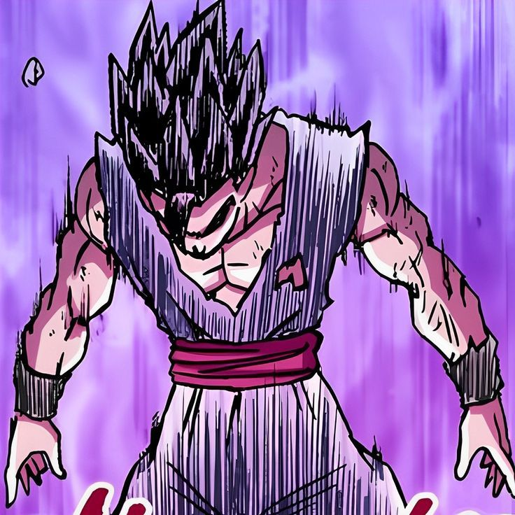

School-going programmer turning curiosity into code. Primarily building backends, automation scripts, and experiments with Python, while breaking apart algorithms in C++, Java, and beyond.
Bypassing limits, automated web scraping, API poking, reverse-engineering protocols, and sleepless testing runs.
School projects, strict documentation, clean architecture, and keeping teachers and parents convinced I'm an angel.